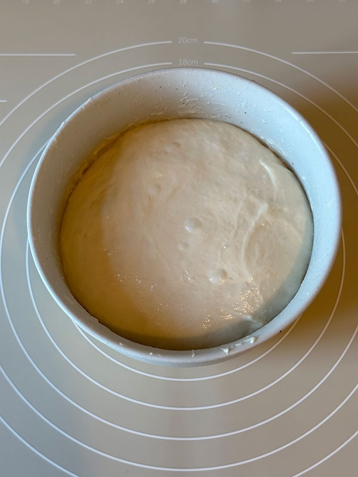
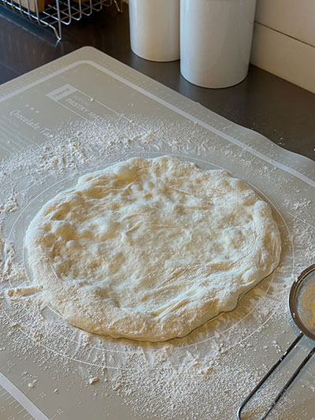
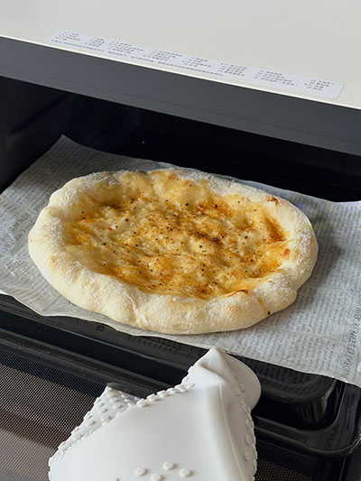
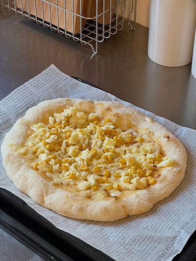
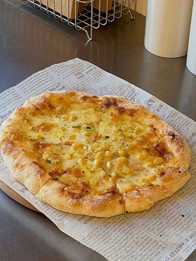
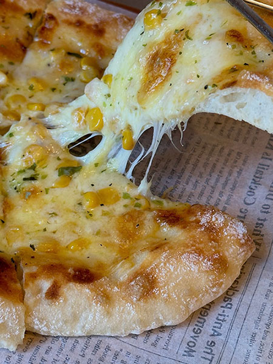
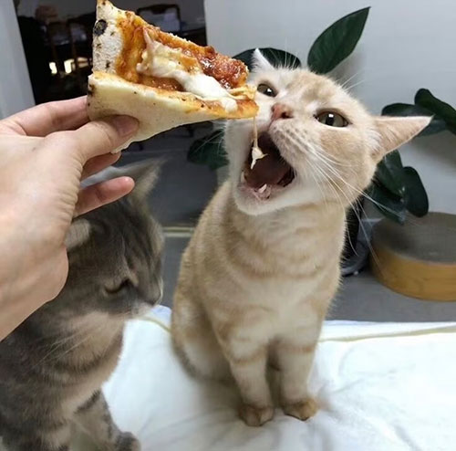

[The Night Before]
🍕STEP 1: Mix the dough
Before going to bed, mix the flour, water, and yeast together.
Add a small amount of olive oil and stir until no dry flour remains.
No kneading is required.
🍕STEP 2: Rest & stretch
Let the dough rest for 30 minutes, then perform one stretch-and-fold.
🍕STEP 3: Cold fermentation
Cover the dough and place it in the refrigerator to cold-ferment overnight.

[The Next Morning]
🍕STEP 4: Shape the dough
Take the dough out of the fridge, turn it onto a floured surface,
and gently shape it into a round disc.
Don’t worry about being perfect.

🍕STEP 5: Preheat the oven
Preheat the oven to 230°C with the baking tray inside for 15 minutes.
🍕STEP 6: First bake
Brush a layer of sauce onto the pizza base.
Place it in the oven and bake at 230°C for 5 minutes.

🍕STEP 7: Add toppings & bake again
Remove the pizza, sprinkle on cheese and corn (anything you like),
then return it to the oven and bake for another 5 minutes.

🍕STEP 8: Finish & season
Once baked, optionally grind a little rose salt on top
and sprinkle with some seaweed flakes for extra flavor.


This is
the final look!
Bon Appetit!~^^~
